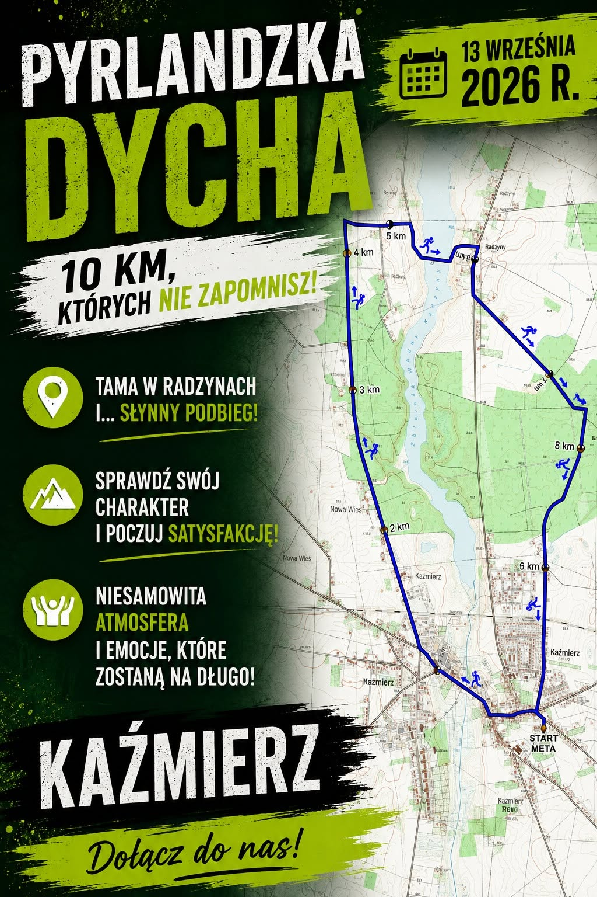
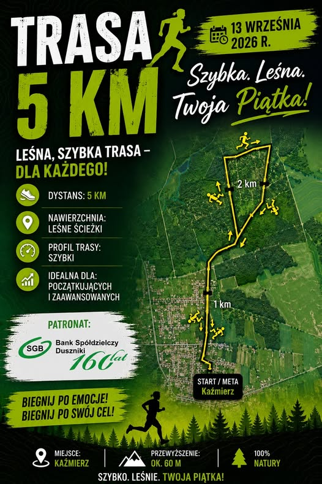

14. edycja Kaźmierz • Wielkopolska
Pobiegnij
Doliną Samy
Sportowe emocje, lokalna energia i trasa, do której chce się wracać. Wybierz swój dystans i spotkajmy się na starcie.

Następna edycja
Do zobaczenia na starcie!
Termin wydarzenia: 13 września 2026
--dni
:
--godz.
:
--min.
:
--sek.
Bieg z charakterem
Tu liczy się każdy krok
miejsce na autentyczne zdjęcie z poprzedniej edycji
14lat biegowej
historii
historii
Półmaraton Doliną Samy to więcej niż wynik na mecie.
To lokalne święto sportu, stworzone dla doświadczonych biegaczy, debiutantów, rodzin i kibiców. Malownicza trasa prowadzi przez serce gminy Kaźmierz, łącząc sportową rywalizację z wyjątkową atmosferą.
- Atestowane i różnorodne dystanse
- Elektroniczny pomiar czasu
- Medal i bogaty pakiet startowy
- Strefa kibica i biegi dla dzieci
Znajdź swój dystans
Jeden dzień. Cztery wyzwania.
21,097 km
Główny dystans
Półmaraton Doliną Samy
Wyzwanie dla tych, którzy chcą poczuć pełnię sportowych emocji i zobaczyć najpiękniejsze zakątki okolicy.
Start09:00
Limit3 godz.
Trasaasfalt / teren
Wybieram półmaraton →
Trasa dostępna wkrótce
Trasa pełna zieleni
Poznaj Dolinę Samy
z najlepszej strony
Nowa strona powinna prezentować interaktywną mapę, profil wysokościowy, punkty odżywcze i ważne miejsca dla zawodników oraz kibiców.
4punkty
odżywcze
odżywcze
82 mprzewyższenia
łącznie
łącznie
70%trasy wśród
zieleni
zieleni

Mapa półmaratonu zostanie dodana po publikacji przebiegu.
Dzień zawodów
Wszystko w dobrym rytmie
Otwarcie
Biuro zawodów
Odbiór numerów i pakietów startowych.
Rozgrzewka
Wspólny trening
Energetyczne przygotowanie w strefie startu.
Start główny
Półmaraton
21,097 km przez Dolinę Samy.
Kolejne starty
10 km, 5 km i NW
Pyrlandzka Dycha, Piątka i Nordic Walking.
Finał
Dekoracja i piknik
Nagrody, muzyka i wspólne świętowanie.

Koszulka edycji 14
Zamów ją
przy rejestracji
Pamiątkową koszulkę można dodać podczas zapisów online. To mocny element identyfikacji wydarzenia i dobry powód, żeby pokazać ją wyraźnie na stronie.
01 Wyraźny nadruk wysokiej jakości
02 Nadruk na rękawie
03 Subtelny wzór na całości
04 Kontrastowe wykończenia
Zamów przy rejestracji →
Przed startem
Najczęstsze pytania
Gdzie znajduje się biuro zawodów?+
W wersji docelowej znajdzie się tutaj dokładny adres, mapa dojazdu, godziny pracy oraz informacje o parkingach.
Czy mogę zmienić wybrany dystans?+
Zasady zmiany dystansu należy uzupełnić zgodnie z regulaminem organizatora.
Co znajduje się w pakiecie startowym?+
Koszulka, numer startowy z chipem, medal po ukończeniu biegu oraz świadczenia regeneracyjne.
Czy na miejscu będzie parking i depozyt?+
Takie informacje warto pokazać na osobnej, prostej mapie sytuacyjnej przed wydarzeniem.
Gotowy na wyzwanie?
Twoja meta zaczyna się tutaj.
Wybierz dystans, zapisz się i zacznij przygotowania do kolejnej edycji.